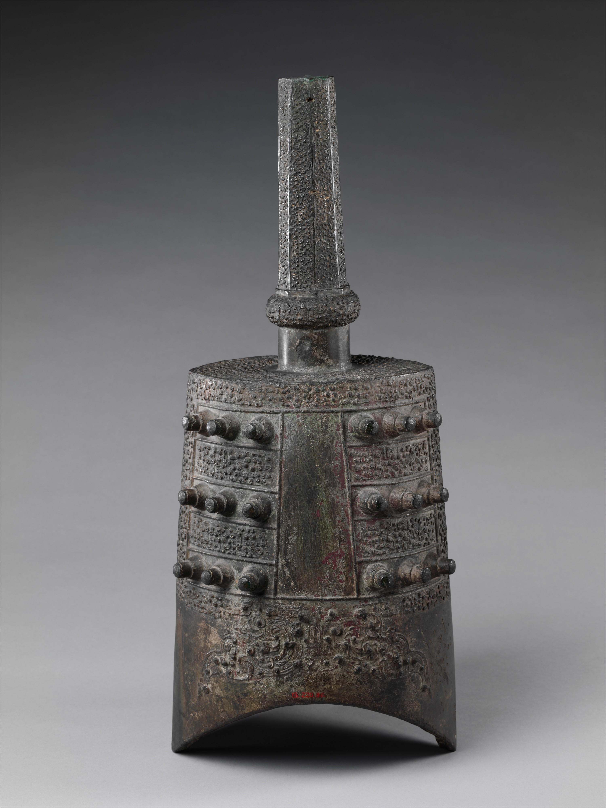

a1
b1
c1
d1
e1
f1
g1
A
B
C
Tutorial
1. Click the "Record" button to start recording your melody.
2. Click on any bell image to play its sound (a1, b1, c1, d1, e1, f1, g1, A, B, C).
3. Click multiple bells to create your own melody.
4. Click the "Stop" button when you're done recording.
5. Click "Save" to save your recording as a mp3 file.
6. Adjust the volume using the slider in the bottom-left corner.
Enjoy making your own bianzhong music!